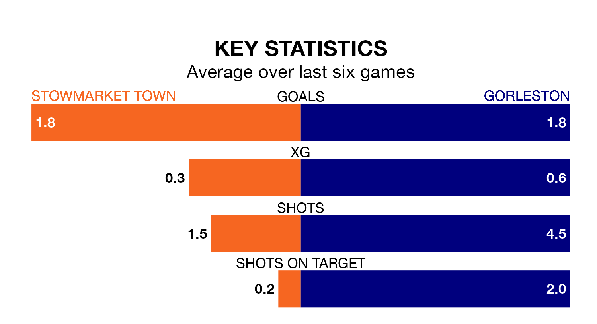

Gorleston are strong favourites to take all three points despite Stowmarket Town's home advantage in Saturday's match.
*Betting Company* are offering odds of 1.6 on Gorleston sealing the win, with the visitors sitting 12th in the Isthmian League Division One North table.
Stowmarket, who are 20th in the league and 23 points behind Gorleston, are priced at 4.2 to win. A draw is set at 4.
Stowmarket are in terrible form in the Isthmian League Division One North, with no wins and a draw from their last six games.
With three wins and two draws over that period, Gorleston's form is much better – they have taken 11 points from 18, compared to Town's one.
With 25 goals in 24 games so far this season, the home team are scoring at below the league average rate with 1.0 goals per game. And they are conceding more than average, letting in 77 goals at a rate of 3.2 per game.
The visitors are also below average scorers, with 1.4 goals per game, compared to a league average of 1.7. They have conceded 1.3 goals per game.
In the last three years, Stowmarket and Gorleston have played each other on three occasions. Stowmarket won one of them and they drew the other.
Their last meeting was on January 6, when they played out a 1-1 draw.
Stowmarket's last match was on February 3, a 3-1 loss against Bowers and Pitsea.
Gorleston drew 1-1 with Bowers and Pitsea last time out, on February 11.
Updated: 15:10 (UTC), 15/03/24